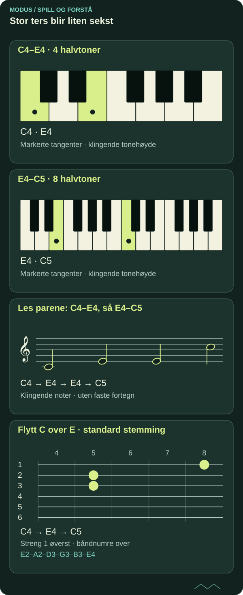

Intervallomvendinger: hør samme toner fra en ny side
Når den nederste tonen flyttes en oktav opp, endres både intervallets størrelse og klanglige plassering. Lær å beregne, høre og bruke endringen i melodikk og flerstemmig sats.
DETTE LÆRER DU
Intervallomvendinger: hør samme toner fra en ny side
- Omvende enkle intervaller med korrekt størrelse og kvalitet.
- Skille intervallomvending fra akkordomvending.
- Anvende omvending i to stemmer på gitar og piano.
Før du begynner
Toner og intervaller; bokstavnavn og halvtoner. MODUS bruker B for norsk H og B♭ for norsk B.

Flytt én tone, behold toneklassene
Spill C4 og E4. C4 er midtre C i vitenskapelig oktavnotasjon; enkelte musikkprogrammer viser et annet oktavnummer. Flytt C4 til C5 og behold E4. Det første intervallet, C4–E4, er en stor ters. Det nye, E4–C5, er en liten sekst. Tonenes toneklasser er uendret, men nederste tone er ny.
Omvending betyr her at den nederste av to toner flyttes over den øverste med én oktav. Det er en konkret registerendring. Du skal fortsatt navngi intervallet nedenfra og opp. Å spille E4 etter C4 i stedet for samtidig omvender ikke intervallet; det endrer bare måten du presenterer det på.

Les diagrammet som tekst
- C4–E4 · 4 halvtoner: C4 → E4
- E4–C5 · 8 halvtoner: E4 → C5
- Les parene: C4–E4, så E4–C5: C4 → E4 → E4 → C5
- Flytt C over E · standard stemming: streng 3, bånd 5: C4; streng 2, bånd 5: E4; streng 1, bånd 8: C5
To regler som må brukes sammen
For enkle intervaller innenfor oktaven summerer intervallnumrene til ni: sekund blir septim, ters blir sekst og kvart blir kvint. Prim og oktav er et grensepar i denne regnemåten. For sammensatte intervaller reduserer du først til intervallet innenfor oktaven; en none har sekund som enkel form.
Kvaliteten endres også. Stor blir liten, liten blir stor, ren forblir ren, forstørret blir forminsket og omvendt. C–F♯ blir F♯–C: forstørret kvart blir forminsket kvint. Begge er seks halvtoner i likestemming, men stavemåten viser hvilken intervallfunksjon du har. Ni-regelen alene skiller ikke en stor sekst fra en liten sekst.
Regn ut før du spiller
C–D er en stor sekund med to halvtoner. D–C i neste oktav er en liten septim med ti halvtoner. C–G er en ren kvint med sju halvtoner. G–C er en ren kvart med fem. Avstandene utfyller oktavens tolv halvtoner.
Prøv også E–G♯ og G♯–E. Den store tersen på fire halvtoner blir en liten sekst på åtte. Skriv de to bokstavnavnene først og tell begge endepunktene. Kontroller deretter kvaliteten. Enharmoniske navn som G♯ og A♭ kan gi samme tangent, men ulike intervallnavn.
Piano: hold igjen den øverste tonen
Spill C4–E4 som rolig samklang. La E4 ligge og flytt C4 opp til C5. Lytt etter at den tidligere basstonen nå ligger øverst. Gjør samme forsøk med C4–G4 og deretter G4–C5. Syng den nye basstonen før du spiller den.
Bygg en firetakters skisse i 4/4 med to hele noter per takt: C4/E4, D4/F4, E4/G4, C4/E4. Skriv så en variant der den nederste tonen i hver samklang løftes en oktav. Sammenlign retningen i begge stemmene. Dette er en undersøkelse av intervall og register, ikke automatisk en stilriktig kontrapunktøvelse.
Gitar: flytt tone, ikke bare grep
I standard stemming kan C spilles på tredje streng, bånd 5, og E på andre streng, bånd 5. Spill dem sammen. Flytt C til første streng, bånd 8, og behold E på andre streng, bånd 5. C–E blir E–C uten at toneklassene skifter. Slå bare an de oppgitte strengene.
Gjenta med G på andre streng, bånd 8, over C på tredje streng, bånd 5. Flytt deretter C til første streng, bånd 8. Navngi først kvinten og deretter kvarten. Spill langsomt og slipp unødvendig grepstrykk; klangen skal hjelpe deg å følge stemmene.
Bruk omvendingen i en frase
Skriv en melodi med en stigende ters, for eksempel C–E–D–C som firedeler. Lag et svar som åpner med E–C i oktaven over E, altså en stigende liten sekst. La resten av svaret finne en naturlig vei tilbake. Du har hentet en ny melodisk gest fra de samme toneklassene.
Skill dette fra akkordomvending: C/E er en C-durakkord med E i bassen og kan inneholde mange toner og doblinger. Intervallomvending beskriver forholdet mellom to bestemte toner. Ta opp originalen og svaret. Beskriv hvor spranget passer uttrykket, og hvor en annen registerplassering gir bedre flyt.
Kildegrunnlag og faglig status
Original norsk MODUS-tekst med egne undervisningseksempler. Faglig referansegrunnlag for videre kontroll:
Under arbeid – ikke faglig sluttgodkjent. Artikkelen dokumenterer ingen personlig mestring og gir ingen formell studie- eller publiseringsgodkjenning. Skriftlig forklaring, faktisk spill og lytting må vurderes hver for seg.
FRA LESING TIL SPILLING
Prøv det selv.
Skriv og spill seks egne intervallpar fra D. Oppgi bokstavtelling, kvalitet og halvtoner før og etter omvending. Avslutt med en firetakters tostemmig skisse og en kort lydfil.
- Gjør et selvstendig første forsøk før du ser quizfasiten.
- Spill den konkrete modellen på gitar og piano, og lytt til forskjellen.
- Lag en ny variant og behold første og bearbeidede versjon separat.
SJEKK FORSTÅELSEN
Hva sitter igjen?
Tre spørsmål om det du har lest. Alle tre riktige gir fullført quiz. Du kan prøve så mange ganger du vil.
Fullføring lagres i denne nettleseren og deles mellom norsk og engelsk.
Du har svart riktig på alle tre spørsmålene. Ta ideen med til instrumentet.
Til artikkelbiblioteket ↗︎ANBEFALT NESTE STEG
Kadens og tonale funksjoner: bygg en tydelig avslutning
Neste del av den foreslåtte faglige ruten. Velg emner ut fra forkunnskap og behov.
Kadens og tonale funksjoner: bygg en tydelig avslutning ↗︎